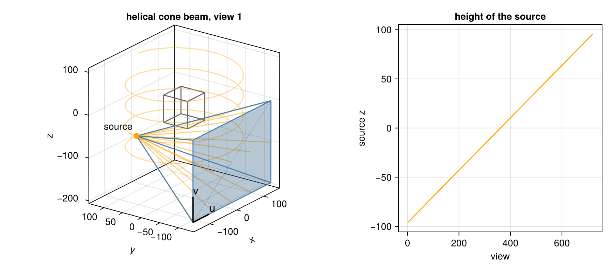
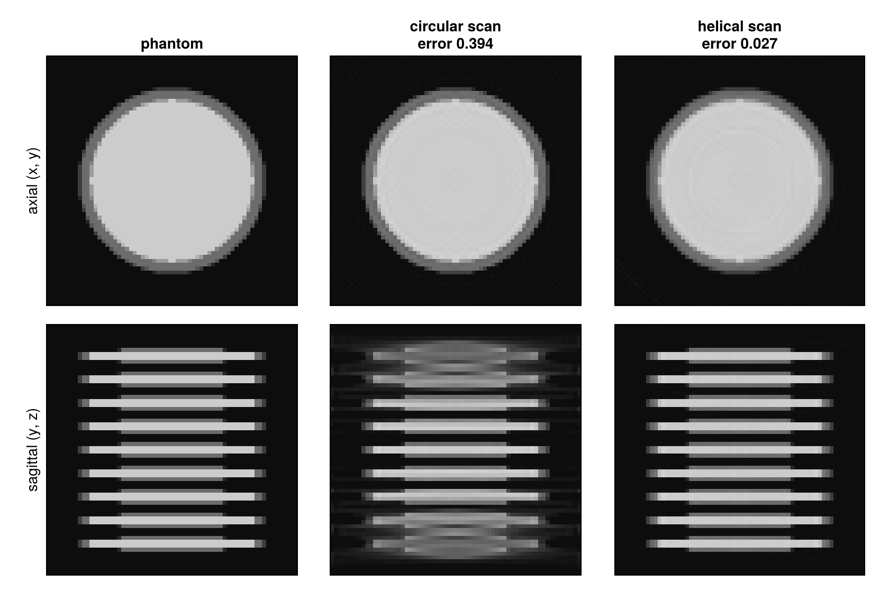
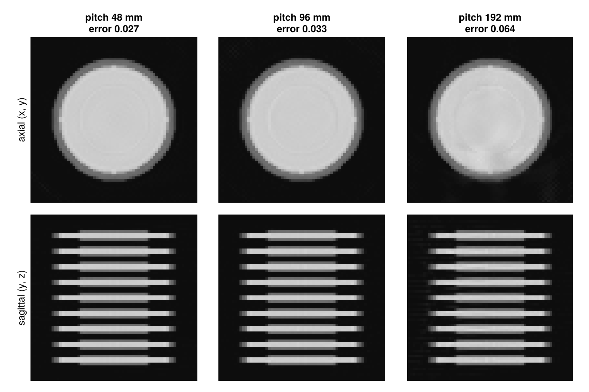

Helical Cone-Beam CT
Circular Cone-Beam CT showed that a circular orbit cannot measure planes parallel to it away from the orbit. A helical scan moves the source along the rotation axis while it turns, so that it passes every height of the object. This tutorial reconstructs the same stack of discs from helical scans and looks at the pitch, the advance of the source along the axis per turn (here a length in mm).
using CTOperators, ImagePhantoms, RegularizedLeastSquares, LinearOperatorCollection, CairoMakie
using ImageGeoms: axisdepth_figure (generic function with 1 method)The object: nine discs, 3 mm thick at their center and 6 mm apart, in a volume of 64³ voxels of 1 mm.
n = 64
image = ImageGeom(; dims=(n, n, n), deltas=(1.0, 1.0, 1.0))
discs = [ellipsoid((0, 0, z), (24, 24, 1.5), (0, 0, 0), 1.0) for z in -24:6:24]
x_true = Float32.(phantom(axis(image, 1), axis(image, 2), axis(image, 3), discs, 2));The scan
Source and detector as in the circular tutorial (source 128 mm from the axis, flat detector of 144 × 96 cells of 2 mm at 256 mm), with 180 views per turn. At the axis the detector covers 96 · 2 mm / 2 = 96 mm along z. The helix rises by 48 mm per turn (the pitch), half the height the detector covers, over four turns from z0 = -96 to z = 96 mm: the source starts below the volume and ends above it.
function helix(pitch, turns)
m = round(Int, 180 * turns) # number of views
helical_cone_beam(; angles=range(0, 2pi * turns, m + 1)[1:m], pitch, z0=-pitch * turns / 2,
dso=128, dsd=256, nu=144, nv=96, du=2.0)
end
geometry = helix(48, 4);The first view, the path of the source (orange helix) and its height over the views:

Reconstruction
20 CGNR iterations, for the helix and, for comparison, for the circular scan:
function reconstruct(geometry)
op = JosephProjector(image, geometry)
solver = createLinearSolver(CGNR, op; AHA=normalOperator(op), iterations=20)
reshape(solve!(solver, vec(op * x_true)), n, n, n)
end
circle = circular_cone_beam(; angles=range(0, 2pi, 181)[1:180], dso=128, dsd=256, nu=144, nv=96, du=2.0)
x_circle, x_helix = reconstruct(circle), reconstruct(geometry);
Every disc is reconstructed: each plane through the object now meets the path of the source.
The pitch
A larger pitch scans faster and with less dose per length. With the same views per turn, three pitches: half the height the detector covers at the axis (as above), the full height, and twice the height.
pitches = (48, 96, 192)
x_pitch = [x_helix, (reconstruct(helix(p, 192 / p + 1)) for p in pitches[2:end])...];
A voxel near the axis stays in the cone while the source rises by the detector height: for one turn at a pitch of 96 mm, for half a turn at 192 mm. Half a turn is less than the half turn plus fan angle that Fan Beam with a Curved Detector found necessary, and the reconstruction shows shading. Clinical scanners quote the pitch relative to the detector height and use values between about 0.5 and 1.5.
An object moving along the rotation axis during a circular scan, on a table or a conveyor belt, sees the same helix: only the relative motion counts. Getting Started reconstructs such a scan, and Set Up a Geometry shows how to describe any other motion.
This page was generated using Literate.jl.